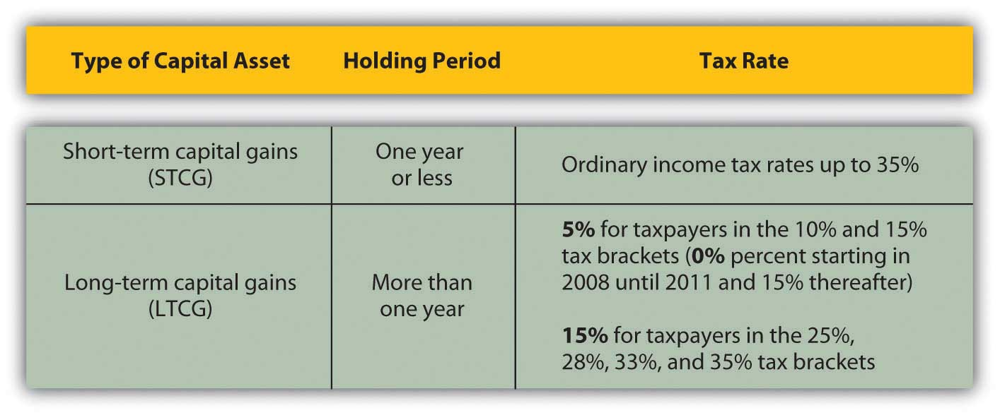

The U.S. government relies most on an income tax. The income tax is the most relevant for personal financial planning, as everyone has some sort of income over a lifetime. Most states model their tax systems on the federal model or base their tax rates on federally defined income. While the estate tax may become more of a concern as you age, the federal income tax system will affect you and your financial decisions throughout your life.
Figure 6.4 "U.S. Individual Tax Form 1040, Page 1" shows an individual tax return, U.S. Form 1040.
Figure 6.4 U.S. Individual Tax Form 1040, Page 1

Figure 6.5 U.S. Individual Tax Form 1040, Page 2

There are four taxable entities in the federal system: the individual or family unit, the corporation, the nonprofit corporation, and the trust. Personal financial planning focuses on your decisions as an individual or family unit, but other tax entities can affect individual income. Corporate profit may be distributed to individuals as a dividendA share of corporate profit distributed to shareholders, usually as cash or corporate stock., for example, which then becomes the individual’s taxable income. Likewise, funds established for a specific purpose may distribute money to an individual that is taxable as individual income. A trustA legal entity created to own and manage assets for the benefit of beneficiaries., for example, is a legal arrangement whereby control over property is transferred to a person or organization (the trustee) for the benefit of someone else (the beneficiary). If you were a beneficiary and received a distribution, that money would be taxable as individual income.
The definition of the taxable “individual” is determined by filing status:
Some taxes are levied differently depending on filing status, following the assumption that family structure affects ability to pay taxes.
All taxable entities have to file a declaration of incomes and pay any tax obligations annually. Not everyone who files a return actually pays taxes, however. Individuals with low incomes and tax exempt, nonprofit corporations typically do not. All potential taxpayers nevertheless must declare income and show their obligations to the government. For the individual, that declaration is filed on Form 1040 (or, if your tax calculations are simple enough, Form 1040EZ).
For individuals, the first step in the process is to calculate total income. Income may come from many sources, and each income must be calculated and declared. Some kinds of income have a separate form or schedule to show their more detailed calculations. The following schedules are the most common for reporting incomes separately by source.
Interest income is income from selling liquidity. For example, the interest that your savings account, certificates of deposit, and bonds earn in a year is income. You essentially are earning interest from lending cash to a bank, a money market mutual fund, a government, or a corporation (though not all your interest income may be taxable). Dividend income, on the other hand, is income from investing in the stock market. Dividends are your share of corporate profits as a shareholder, distributed in proportion to the number of shares of corporate stock you own.
Business income is income from self-employment or entrepreneurial ventures or business enterprises. For sole proprietors and partners in a partnership, business income is the primary source of income. Many other individuals rely on wages, but have a small business on the side for extra income. Business expenses can be deducted from business income, including, for example, business use of your car and home. If expenses are greater than income, the business is operating at a loss. Business losses can be deducted from total income, just as business income adds to total income.
The tax laws distinguish between a business and a hobby that earns or loses money. You are considered to have a business for tax purposes if you made a profit in three of the past five years including the current year, or if you are operating as a registered business with the intention of making a profit. If you are operating your own business you also must also pay self-employment tax on business income. In addition, the self-employed must pay estimated income taxes in quarterly installments based on expected income.
Tariq is thinking about turning his hobby into a business. He has been successful buying and selling South Asian folk art online. He thinks he has found a large enough market to support a business enterprise. As a business he would be able to deduct the costs of Web site promotion, his annual art buying trip, his home office, and shipping, which would reduce the taxes he would have to pay on his business income. Tariq decides to enroll in online courses on becoming an entrepreneur, how to write a business plan, and how to find capital for a new venture.
Self-employment tax is an additional tax on income from self-employment or business income earned by a sole proprietor. It represents the employer’s contribution to Social Security, which is a mandatory retirement savings program of the federal government. Both employers and employees are required to contribute to the employee’s Social Security account. When you are both the employee and the employer, as in self-employment, you must contribute both shares of the contribution.
Gains or losses from investments derive from changes in asset value during ownership between the asset’s original cost and its market value at the time of sale. If you sell an asset for more than you paid for it, you have a gain. If you sell an asset for less than you paid for it, you have a loss. Recurring gains or losses from investment are from returns on financial instruments such as stocks and bonds. One-time gains or losses, such as the sale of a home, are also reported on Schedule D.
The tax code distinguishes between assets held for a short time—less than one year, and assets held for a long time—one year or more. Short-term capital gains or losses are taxed at a different rate than long-term capital gains or losses (Figure 6.8 "Capital Gains Tax Rates"). When you invest in financial assets, such as stocks, bonds, mutual funds, property, or equipment, be sure to keep good records by noting the date when you bought them and the original price. These records establish the cost basisThe original cost of an asset that is used to calculate a gain (loss) upon sale of the asset. of your investments, which is used to calculate your gain or loss when you sell them.
Figure 6.8 Capital Gains Tax Rates
Rental or royalty income is income earned from renting an asset, either real property or a creative work such as a book or a song. This can be a primary source of income, although many individuals rely on wages and have some rental or royalty income on the side. Home ownership may be made more affordable, for example, if the second half of a duplex can be rented for extra income. Rental expenses can also be deducted from rental income, which can create a loss from rental activity rather than a gain. Unlike a business, which must become profitable to remain a business for tax purposes, rental activities may generate losses year after year. Such losses are a tax advantage, as they reduce total income.
Partnerships and S corporations are alternative business structures for a business with more than one owner. For example, partnerships and S corporations are commonly used by professional practices, such as accounting firms, law firms, medical practices, and the like, as well as by family businesses.
The partnership or S corporation is not a taxable entity, but the share of its profits distributed to each owner is taxable income for the owner and must be declared on Schedule E.
Farm income is income from growing food, livestock, or livestock products, such as wool, to sell. Farmers have a special status in the tax code, stemming from the original agricultural basis of the U.S. economy and the strategic importance of self-sufficiency in food production. Thus, the tax code applies exemptions specifically to farmers.
Other taxable income includes alimony, state or local tax refunds, retirement fund distributions from individual retirement accounts (IRAs) and/or pensions, unemployment compensation, and a portion of Social Security benefits.
Your total income is then adjusted for items that the government feels should not be taxed under certain circumstances, such as certain expenses of educators, performing artists, and military reservists; savings in health savings or retirement accounts; moving expenses; a portion of self-employment taxes; student loan interest; tuition and educational fees; and alimony paid. Income that is not taxed by the U.S. government and does not have to be reported as income includes the following:
It’s important to read tax filing instructions carefully, however, because not everything you’d think would qualify actually does. The government allows adjustments to be reported (or not reported) as income only under certain circumstances or up to certain income limits, and some adjustments require special forms.
The result of deducting adjustments from your total income is a calculation of your adjusted gross income (AGI). Your AGI is further adjusted by amounts that may be deducted or exempted from your taxable income and by amounts already credited to your tax obligations.
Deductions and exemptions reduce taxable income, while credits reduce taxes. Deductions are tax breaks for incurring certain expenditures or living in certain circumstances that the government thinks you should not have to include in your taxable income. There are deductions for age and for blindness. For other deductions, there is a standard, lump-sum deduction that you can take, or you may choose to itemize your deductions, that is, detail each one separately and then calculate the total. If your itemized deductions are more than your standard deduction, it makes sense to itemize.
Other deductions involve financial choices that the government encourages by rewarding an extra incentive in the form of a tax break. Home mortgage interest is a deduction to encourage home ownership, for example; investment interest is a deduction to encourage investment, and charitable donations are deductions to encourage charitable giving.
Deductions are also created for expenditures that may be considered nondiscretionary, such as medical and dental expenses, job-related expenses, or state and local income and property taxes. As with income adjustments, you have to read the instructions carefully, however, to know what expenditures qualify as deductions. Some deductions only qualify if they amount to more than a certain percentage of income, while others may be deducted regardless. Some deductions require an additional form to calculate specifics, such as unreimbursed employee or job-related expenses, charitable gifts not given in cash, investment interest, and some mortgage interest.
There are exemptions based on the number of your dependents, who are usually children, but may be elderly parents or disabled siblings, that is, relatives who generally cannot care for themselves financially. Exemptions are made for dependents as nondiscretionary expenditures, but the government also encourages individuals to care for their financially dependent children, parents, and siblings because without such care they might become dependents of a government safety net or a charity.
After deductions and exemptions are subtracted from adjusted gross income, the remainder is your taxable income. Your tax is based on your taxable income, on a progressive scale. You may have additional taxes, such as self-employment tax, and you may be able to apply credits against your taxes, such as the earned income credit for lower-income taxpayers with children.
Deductions, exemptions, and credits are some of the more disputed areas of the tax code. Because of the depth of dispute about them, they tend to change more frequently than other areas of the tax code. For example, in 2009, a credit was added to encourage first-time homebuyers to purchase a home in the hopes of stimulating the residential real estate market. As a taxpayer, you want to stay alert to changes that may be to your advantage or disadvantage. Usually, such changes are phased in and out gradually so you can include them in your financial planning process.
Once you have calculated your tax obligation for the year, you can compare that to any taxes you have paid during the year and calculate the amount still owed or the amount to be refunded to you.
You pay taxes during the tax year by having them withheld from your paycheck if you earn income through wages, or by making quarterly estimated tax payments if you have other kinds of income. When you begin employment, you fill out a form (Form W-4) that determines the taxes to be withheld from your regular pay. You may adjust this amount, within limits, at any time. If you have both wages and other incomes, but your wage income is your primary source of income, you may be able to increase the taxes withheld from your wages to cover the taxes on your other income, and thus avoid having to make estimated payments. However, if your nonwage income is substantial, you will have to make estimated payments to avoid a penalty and/or interest.
The government requires that taxes are withheld or paid quarterly during the tax year because it uses tax revenues to finance its expenditures, so it needs a steady and predictable cash flow. Steady payments also greatly decrease the risk of taxes being uncollectible. State and local income taxes must also be paid during the tax year and are similarly withheld from wages or paid quarterly.
Besides income taxes, other taxes are withheld from your wages: payments for Social Security and Medicare. Social Security or the Federal Insurance Contributions Act (FICA) and Medicare are federal government programs. Social Security is insurance against loss of income due to retirement, disability, or loss of a spouse or parent. Individuals are eligible for benefits based on their own contributions—or their spouse’s or parents’—during their working lives, so technically, the Social Security payment withheld from your current wages is not a tax but a contribution to your own deferred income. Medicare finances health care for the elderly. Both programs were designed to provide minimal benefits to those no longer able to sell their labor in exchange for wage income. In fact, both Social Security and Medicare function as “pay-as-you-go” systems, so your contributions pay for benefits that current beneficiaries receive.
If you have paid more during the tax year than your actual obligation, then you are due a refund of the difference. You may have that amount directly deposited to a bank account, or the government will send you a check.
If you have paid less during the tax year than your actual obligation, then you will have to pay the difference (by check or credit card) and you may have to pay a penalty and/or interest, depending on the size of your payment.
The deadline for filing income tax returns and for paying any necessary amounts is April 15, following the end of the tax year on December 31. You may file to request an extension of that deadline to August 15. Should you miss a deadline without filing for an extension, you will owe penalties and interest, even if your actual tax obligation results in a refund. It really pays to get your return in on time.
Download and study the following schedules or their equivalent for the current year. In what circumstances would you have to file each one? Tentatively fill out any schedules that apply to you for the current year.
Find answers to the following questions at http://www.finaid.org/scholarships/taxability.phtml.